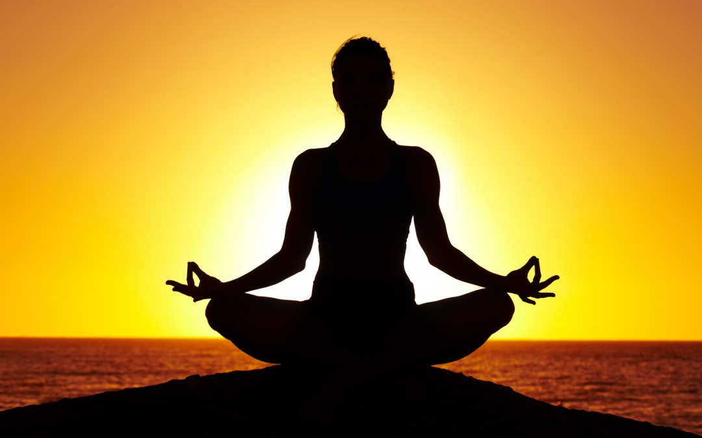

The word yoga comes from the Sanskrit word yuj, which means union of the individual and universal consciousness.Yoga is not just exercise, it is how skillfully we communicate, and act in any given situation. So here, yoga is described more as a mind skill.This basic yoga flow will help you be more present throughout your day.
Click the next step to begin.

Come onto the hands and knees with your wrists underneath your shoulders and your knees underneath your hips.
Inhale as you tuck your toes under your heels. Then exhale to lift your hips, coming into the classic upside-down-V shape called Downward Facing Dog.
Spread your fingers wide, and create a straight line between your middle fingers and elbows. Work on straightening your legs and lowering your heels toward the ground. Relax your head between your arms, and direct your gaze through your legs or
up toward your belly button.
Breathe deeply for five breaths.
From Down Dog, inhale to step your right foot forward between your hands. Turn your left heel in, press into your feet, and lift your torso up.
Raise your arms up, and press your palms together. Draw your shoulder blades down toward your hips, and gaze up toward your hands.
Stay here for five breaths.
Hold your legs in Warrior 1 position, and on an exhale, cross your left elbow over your right thigh.
Press your palms together firmly, and push into your bottom arm to lengthen the spine and increase the twist.
Gaze over your right shoulder, breathing for five full breaths.
Lie on your back, and close your eyes. In order to relax and open your body fully, extend your arms a few inches away from the body, with your palms facing up.
Bring about 15 to 20 inches between your feet, allowing your feet to fall open with your toes pointing out. Actively shrug your shoulders and shoulder blades down toward your hips. Lengthen through your spine as much as possible, and try to press
the small of your back into the floor.
After you've found a comfortable position, enjoy the stillness for five to 10 minutes.